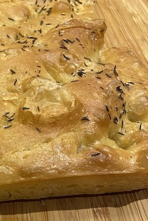
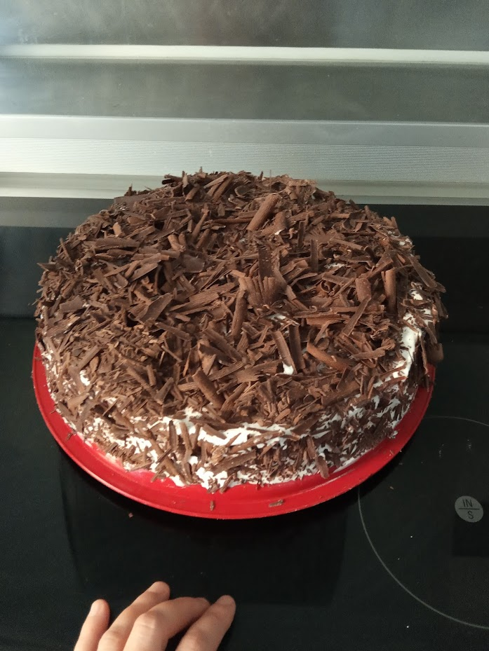
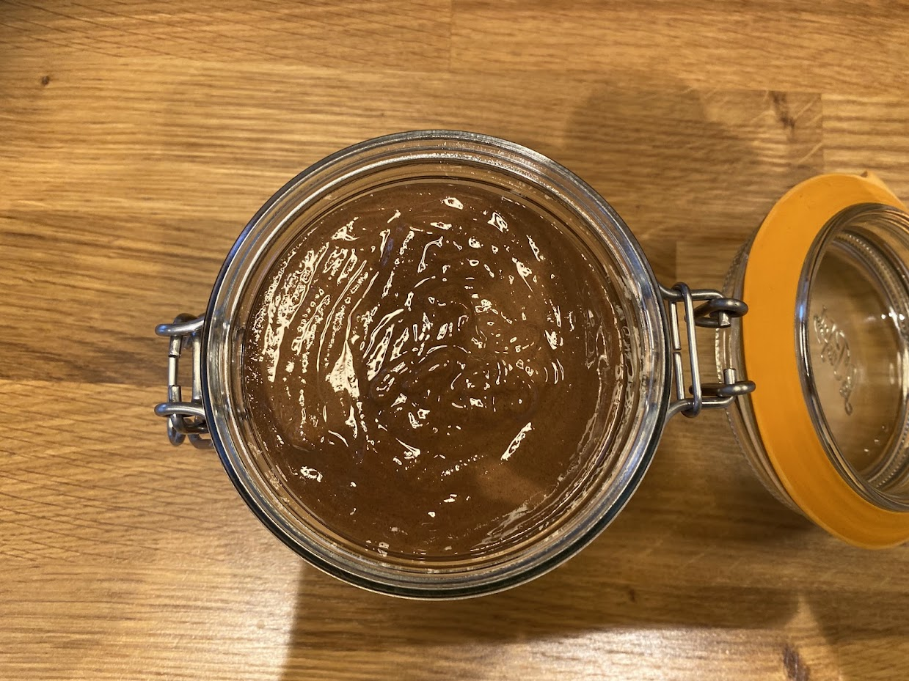
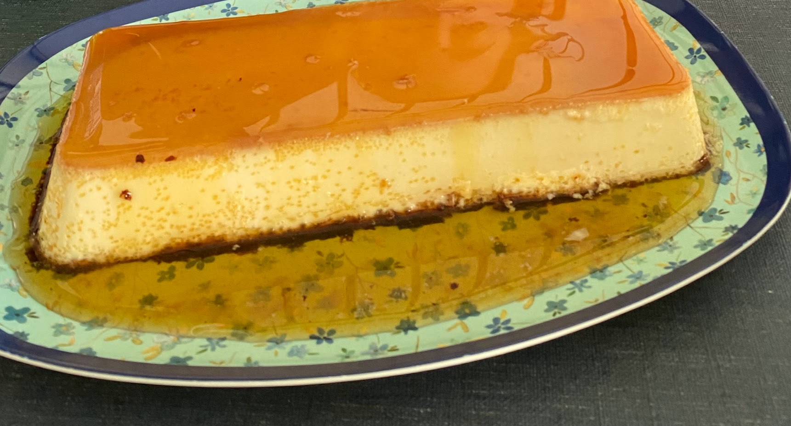
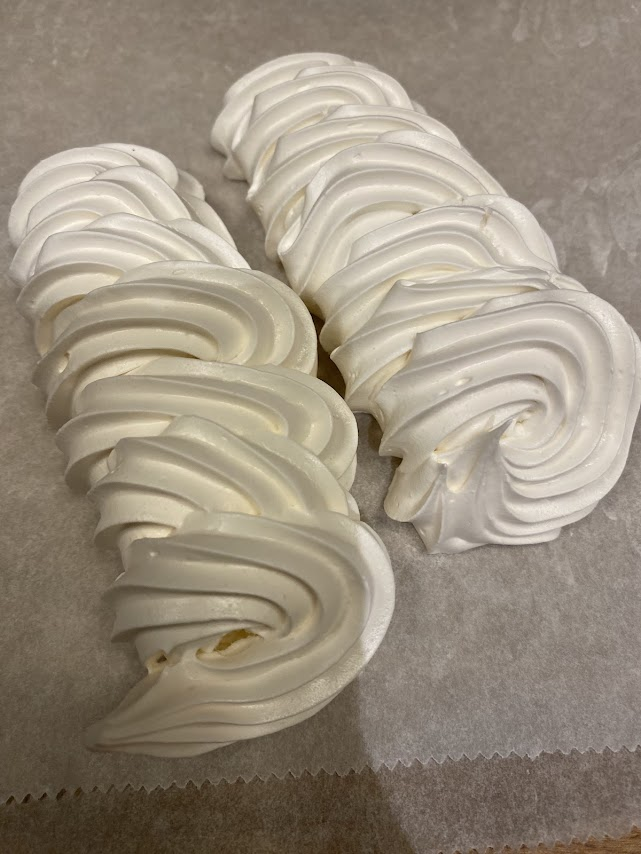

Les Recettes Parfaites de Gigi
Des recettes simples, précises et toujours réussies
Des recettes simples, précises et toujours réussies
Découvrez toutes mes recettes, classées par ordre alphabétique.

⏱️ 25 min — 🔥 Facile — 👥 40 biscuits




⏱️ Plusieurs étapes — 🔥 Moyen — 👥 750g de pâte





⏱️ 25 min — 🔥 Facile — 👥 40 biscuits